Inspírate, busca, guarda y crea los mejores GIFOS

Trending:
Aqui van los títulos del trending
Ver Mas


FAVORITOS
¡Guarda tu primer GIFO en Favoritos para que se muestre aquí!
Mis GIFOS

¡Anímate a crear tu primer GIFO!
Mira los últimos GIFOS de nuestra comunidad